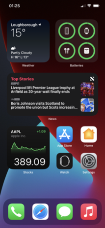

for those who don't know, iOS is the mobile OS developed for iPhones which is owned by Apple, whos known for some terrible acts against user freedom and privacy.
First things first, iOS is non-free software! So I automatically hate it
Remember the headphone jack?
iOS by nature is user restrictive when it comes to using the OS, want to change the UI? nope, change the app icons? nope, want to uninstall the default apps? lmao no. Because of this, iOS is an awful phone OS as it lacks many customization that Linux and Android phones come with out of the box.
Actually, customization on iOS in its entirety is a meme. Let me sum it up here:
>wants to change UI of iOS because the default UI sucks
>can't change the UI because of how locked down iOS is
suck my dick apple
Who thought putting the back button in multiple spots from top left to bottom left was a good idea?
Swiping down on the right side of the top of an iPhone with a notch gives you their very non customizable control pannel, and the other side gives the notification screen? Just make it one section like android good god
The app drawer, oh im sorry, the app library is a swipe right to access it... AAAAAAAAA
the icons default to the top of the screen, so in my past days of an iOS user, I would just use the dock since it was much more comfy for me to use instaid of reaching to the top of the screen to open an app (And why i hate big phones in general)
Apple says to """protect""" and """not spy""" on its users, which is actual BS, iOS is actually spyware that gives massive amounts of your private data to apple, wish there was a spyware watchdog article on it.
Stop using iOS and escape the apple ecosystem. Switch to actual decent phone operating systems such as GrapheneOS Or Replicant, or better yet, get a Pinephone.